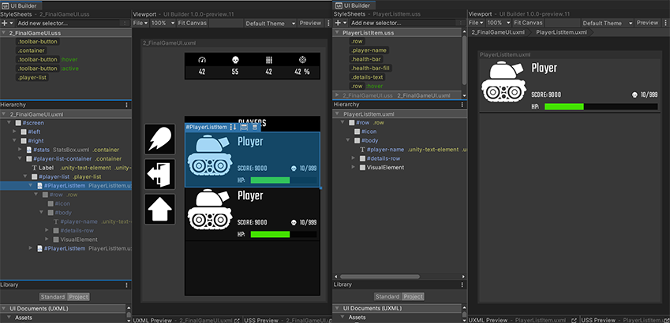
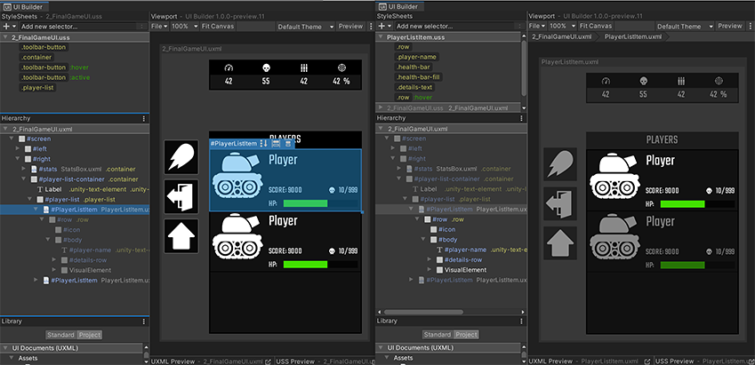

Using UXML instances as templates
You can instantiate existing UI Documents (UXML) as Templates inside your current UI Document as Template Instances, similar to how Prefabs work in Unity. To use a UI document as a template, do the following:
- Under the Library’s Project tab, find the UXML Asset (
.uxml) you wish to instantiate. - Drag it into the Hierarchy like an element in the Library.
A Template Instance appears in the Hierarchy like a normal element of type TemplateContainer. The name of the .uxml file displays as greyed font to the right of its name. If you expand the Template Instance you can see the internal hierarchy of the instance. This internal hierarchy, as explained in Working with elements, is read-only and only shown for reference. To make edits to this hierarchy, you must edit the original UI Document.
Edit a UI document template instance
UI Builder offers three ways to edit an original UI Document used as a Template Instance. To access these options, right-click on a Template Instance and choose:
-
Open in UI Builder: This unloads the current UI Document and loads the UI Document being instanced:

- Open as Sub-Document: This selection keeps the current UI Document loaded in the background while loading the UI Document being instanced. The Hierarchy and the Canvas only displays the contents of the Sub-Document, while the StyleSheets pane includes the style sheet of the background parent UI Document in a read-only state. This is because the style sheets are still being applied to the Sub-Document: 
- Open as Sub-Document In-Place: This selection keeps the current UI Document loaded while making all its elements read-only and grayed out in the Hierarchy and the Canvas. This mode allows editing the contents of the UI Document being instanced, within the context of the parent UI Document. This mode is ideal for making changes to Template Instance content without losing the context of the host document: 
For cases (2) and (3) above, a breadcrumb appears above the Viewport indicating this state. You can repeat this action on a Template Instance inside the original Template Instance, recursively. Use the breadcrumb to go back to a parent UI Document.
Going into a Sub-Document and back to the parent document require a full save: